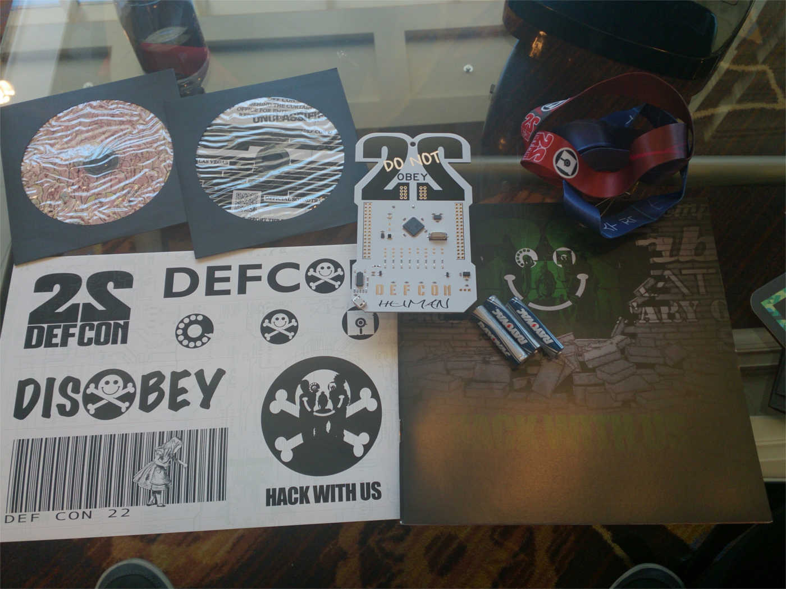
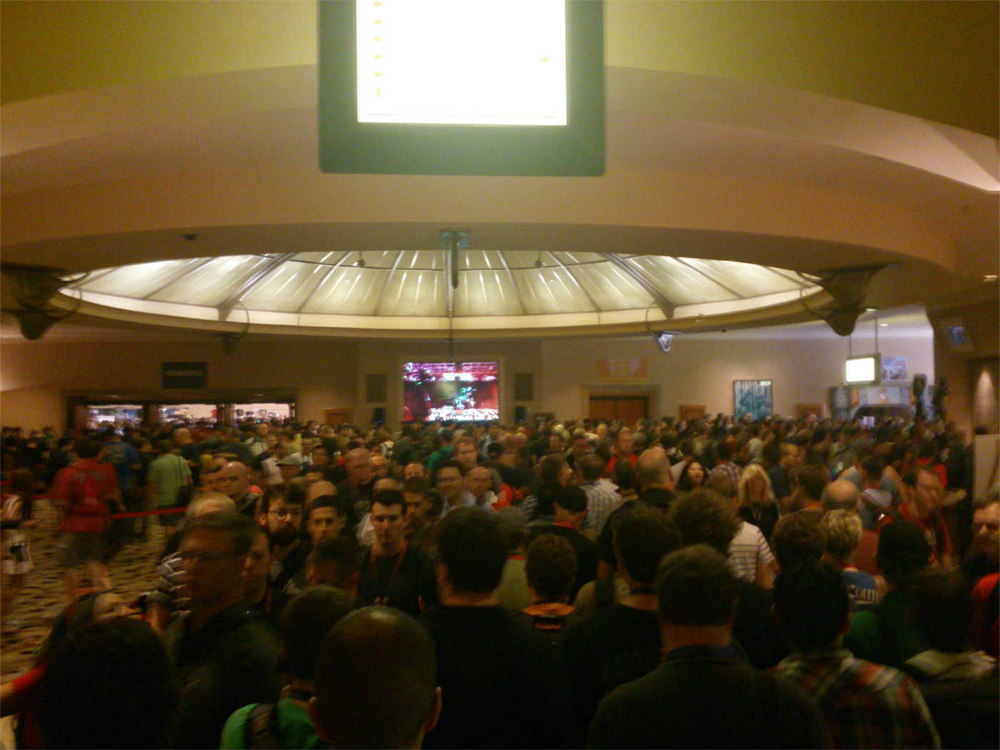

DEFCON 22

Defcon is over and the dust has settled - or at least I have rested. Since this was my first Defcon, here is a short write up of my experience.
First of, this post is about DC22 and that alone. If you want to read about my trip to BlackHat, go read my BlackHat review. But honestly, why would you? This is defcon we're talking about!
Since I attended Blackhat, I had only three out of four days of defcon. I arrived around 9:00 AM with my badge in hand at RIO Hotel trying to figure out where to go. Ah, just follow the stream of people through the casino. Since I had already picked up my badge at BH the day before, I skipped standing in line for three+ hours and went around at the conference site. It was surprisingly quiet and only small groups of people where walking around, which surprised me to say the least. Where were the masses of hackers, geeks and strange people I had mentally prepared myself for? There wasn't that much to see, so I headed for Pen&Teller at track 5 where I wanted to attend my first talk. A direct but friendly and loud voiced goon (defcon voluntary personel) was shouting at the attendees, including me, as we slowly made our way up the escalators to the upper seatings.
"If you just take a few steps and take a seat, this would go much quicker. It's not that hard, you've done it before. You've already taken a few steps to get up here, now take a few more steps and sit down. Move it guys, you're too slow, the escalator is faster then you! THE ESCALATOR IS FASTER THEN YOU!"
He then explained how we should go about choosing our seat. "Move it, go to the end of the row and sit down. There is a second row, start filling it - now! If the seats next to you are emtpy, you've done it wrong!" He put his hands on the shoulders of one guy, who was sitting all by himself in one of the top rows. "IF THE SEATS NEXT TO YOU ARE EMTPY - YOU'VE - DONE IT - WRONG!".
The talk was a mix of how the badges where made and a general introduction to the mess that is DEFCON. I won't go into detail, but if you haven't seen a DEFCON badge before, this is what the DC22 badge and the rest of the attendee kit looked like.

I'm not a hardware guy so I don't know all the details, but essentially the badge itself is part of the "be active" mentality of defcon that invites you to do something while you're there. It included a challenge which took the winning team of about 8 people, something around 39 hours to solve. Parts of the challenge were hidden on the badge, others on vendor, goon or speaker badges and the rest placed all over defcon. If you want to know more about the badge challenge, I suggest you read the write up of the winning team [spoiler alert].
After the talk everyone left the room at the same time, once again overloading the escalators and a few minutes later I found myself in the main hall surrounded by tons and tons of people. This is what I had expected when I arrived in the morning!

From there on out it's all a bit blurry. Not because I didn't do anything but because I had no feeling for time for the rest of defcon. The three days felt like only half as much and the days where over so fast that it's hard to recall what exactly happened. But what I do remember, is that I've never talked to so many people at any other conference before. The chillout lounge was a perfect spot to just relax, sit down with some people and chat. And chat we did, about pretty much everything that crossed our minds. The best part however is how total strangers can sit down at a table, and only five minutes later they are joking (at each others expenses of course), drinking, laughing, having a good time and solving problems. And that's what impressed me the most. On Saturday morning I sat down with a small group of people, and they where still hung over from last night. That however did not stop them even one bit from discussing all sorts of matters. If I had to describe defcon in one sentence it would be "thousand of people partying and solving the worlds problems at the same time".
Defcon is of course much more then chatting with people and listening to talks. There are so many challenges to solve, villages to participate in and learn new things, vendors to buy gadgets, books, tools, swag, etc. and everytime I went through the different areas I found something I had overseen the first couple of times. And that's exactly why I'm going to stop here. I can't possibly describe how amazing every single part of defcon was and I would surely miss some awesome things. Just go to DC23 and see for yourself. I'm definitely going to be there and I'm looking forward to spend even more time there and find even more stuff to explore. If you don't have anyone to go with, don't worry - you'll make new friends in the first five minutes, or maybe even before that if you spend some time at forum.defcon.org or the irc channel #dc-forums.
For those who want to see more, I posted all the pictures I made on my twitter account - @HashtagSecurity. Hopefully I will find the time to write about all the challenges, villages and other fun stuff that happens at defcon next year.
Thanks to everyone who attended defcon this year, I had a great time and met loads of great people. Special thanks of course to all goons and organizers and everyone who helped make defcon what it is.
See you next year!